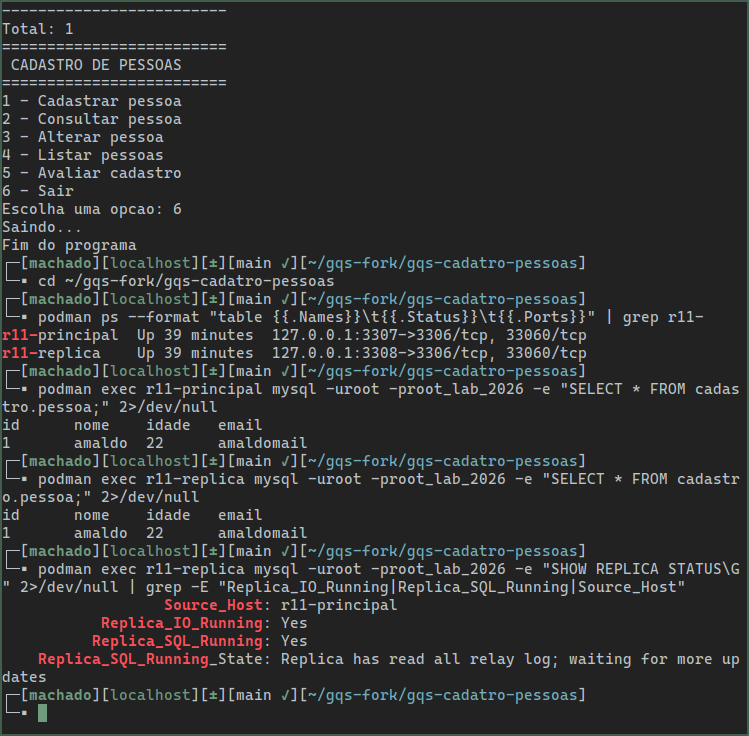
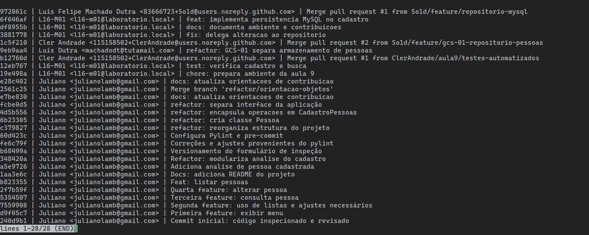

1 Repositório, participantes e papéis
O Projeto Integrador foi conduzido no repositório de Cler Andrade, a partir do projeto-base publicado pelo professor na Aula 1. A convenção de papéis adotada neste relatório segue o slide 57 e o título do Pull Request de persistência (A -> B): A = Cler Andrade, B = Luis Felipe Machado Dutra. As tabelas identificam sempre o login para evitar ambiguidade com a convenção invertida usada no Relatório 11. A Tabela 1 resume os repositórios.
| Papel | Estudante | Repositório | Observação |
|---|---|---|---|
| Origem | Juliano Rodrigo Lamb | github.com/julianolamb/gqs-cadastro-pessoas |
ponto de partida da disciplina |
| A | Cler Andrade (ClerAndrade) |
github.com/ClerAndrade/gqs-cadatro-pessoas |
repositório principal deste relatório |
| B | Luis Felipe Machado Dutra (So1d) |
github.com/So1d/gqs-cadatro-pessoas |
fork do repositório de A |
Tabela 1: Repositórios envolvidos no Projeto Integrador.
As contribuições circularam nos dois sentidos. A separação do armazenamento saiu de B para A pelo Pull Request #2; a persistência em MySQL saiu de A para B pelo Pull Request #1 do repositório de B e voltou a A pelo Pull Request #3, Contribute Final. O Pull Request #1 de A reuniu os testes automatizados da Aula 9. A Seção 6 detalha cada integração.
2 Como preparar e verificar o projeto
Esta seção funciona como guia prático. Os comandos abaixo foram executados no ambiente Windows do laboratório, com PowerShell na raiz do repositório.
Set-Location C:\Users\Usuario\Desktop\GQS\Aula1410\gqs-cadastro-pessoas
python -m venv .venv
.\.venv\Scripts\Activate.ps1
python -m pip install -r requirements.txt
python -m pre_commit install
python src\main.py
python -m pytest -q
python -m pylint src
python -m radon cc src -a -s
python -m pre_commit run --all-files
O pre-commit install precisa ser repetido em cada clone, porque o hook instalado fica em .git/hooks e não é versionado. O arquivo .pre-commit-config.yaml, sim, está versionado. Para usar MySQL, copie infra/.env.example para infra/.env, defina MYSQL_ROOT_PASSWORD apenas no ambiente local e siga infra/README.md. Nenhuma senha real aparece neste relatório, no código Python ou no Compose.
A Tabela 2 apresenta a organização entregue.
| Arquivo ou diretório | Responsabilidade |
|---|---|
src/pessoa.py |
entidade Pessoa com validação de nome e e-mail |
src/cadastro.py |
regras de negócio e delegação ao repositório |
src/repositorio_pessoas.py |
contrato abstrato RepositorioPessoas |
src/repositorio_pessoas_memoria.py |
implementação em lista, usada por padrão |
src/repositorio_pessoas_mysql.py |
DAO MySQL com mysql-connector-python |
src/main.py |
menu e leitura de CADASTRO_REPOSITORIO |
tests/ |
verificações com PyTest, inclusive DAO com conector falso |
infra/compose.yaml |
principal e réplica MySQL 8.4.13 |
infra/README.md |
subida, criação da tabela e vínculo de replicação |
documentos/ |
checklists, métricas, evidências, rastreabilidade e relatórios |
Tabela 2: Estrutura do repositório e função de cada parte.
3 Evolução do Cadastro de Pessoas
3.1 Das aulas iniciais à modularização
O código-base já trazia Pessoa, CadastroPessoas e o menu em src/main.py. A folha original de inspeção da Aula 2 foi preservada em documentos/evidencias/inspeção-aula2.pdf; os achados foram consolidados em documentos/auditoria-aula2.md. Nas aulas seguintes, o menu foi dividido em funções e o programa passou a registrar a pessoa cadastrada. A extração de processar_opcao() foi a mudança mais visível dessa etapa, registrada no commit 2441169.
3.2 Métricas e refatoração
O RADON apontou executar() como o maior bloco do menu, com índice B(8). Depois da extração, o maior bloco passou para A(2). A média de complexidade em src/ passou de A(1,85) para A(1,80), com 49 blocos analisados e nenhum acima de A. Os números anteriores e posteriores estão em documentos/metricas-radon.md.
3.3 Padrões, Pylint e prevenção de defeitos
O checklist da Aula 6 foi preenchido e mantido em documentos/checklist-inspecao-preenchido-aula6.md. O .pylintrc declara py-version=3.15, compatível com o ambiente de execução. Com nomes e docstrings ajustados, o Pylint saiu de 9,83/10 para 10,00/10. O CONTRIBUTING.md passou a descrever o fluxo real de branch, commit, push e Pull Request, e o README.md foi corrigido porque indicava python cadastro.py como ponto de entrada, quando o correto é python src\main.py.
O pre-commit reúne três verificações locais: Pylint em src, PyTest completo e RADON somente leitura. Todas usam o Python da .venv, para não depender da versão do sistema. O Quadro 1 mostra a saída da última rodada.
python -m pytest -q
........................... [100%]
27 passed in 0.36s
python -m pylint src
Your code has been rated at 10.00/10 (previous run: 10.00/10, +0.00)
python -m radon cc src -a -s
49 blocks (classes, functions, methods) analyzed.
Average complexity: A (1.7959183673469388)
python -m pre_commit run --all-files
pylint (src).............................................................Passed
pytest...................................................................Passed
radon cc (somente leitura)...............................................Passed
Quadro 1: Resultado das verificações automatizadas na revisão final.
A Tabela 3 resume os indicadores acompanhados durante a evolução.
| Indicador | Antes | Depois | Evidência |
|---|---|---|---|
| Pylint | 9,83/10 | 10,00/10 | documentos/checklist-pylint.md |
| RADON — maior bloco | B(8) em executar() |
A(2) em processar_opcao() |
documentos/metricas-radon.md |
RADON — média em src/ |
A(1,85) | A(1,80) | documentos/metricas-radon.md |
Blocos B/C em src/ |
presentes | nenhum | radon cc src -a -s |
| Testes PyTest | 23 | 27 | pytest -q |
Tabela 3: Comparação das métricas antes e depois das correções.
3.4 Orientação a objetos e testes automatizados
A Aula 7 introduziu os cinco checkpoints de orientação a objetos, registrados em documentos/checkpoints-aula7.md. O contrato RepositorioPessoas usa ABC e @abstractmethod e define apenas cadastrar(), buscar(), listar() e alterar(). A implementação RepositorioPessoasMemoria é a padrão do menu; RepositorioPessoasMySQL pode substituí-la sem alterar as regras de negócio.
Os casos CT-01 e CT-02 estão em documentos/casos-teste-ct01-ct02.md. A suíte final reúne 27 testes, incluindo tests/test_pessoa.py, os testes do cadastro e um DAO falso para verificar commit(), rollback(), mapeamento de linhas e fechamento de cursor e conexão sem depender de um servidor MySQL.
4 Persistência e infraestrutura
4.1 Contrato e DAO MySQL
A implementação RepositorioPessoasMySQL é ativada por CADASTRO_REPOSITORIO=mysql. A Tabela 4 lista as variáveis lidas por a_partir_do_ambiente(). DB_PASSWORD é obrigatório: se não estiver definido, o método levanta ValueError. Não há senha padrão no código.
| Variável | Uso | Valor ou origem |
|---|---|---|
DB_HOST |
host do MySQL | padrão localhost |
DB_PORT |
porta mapeada no compose | padrão 3307 |
DB_USER |
usuário | padrão root |
DB_PASSWORD |
senha | obrigatória, lida do ambiente local |
DB_NAME |
banco | padrão cadastro |
Tabela 4: Configuração da conexão MySQL.
As consultas usam parâmetros %s, e a transação é confirmada com commit() e desfeita com rollback() em caso de erro. O sinalizador ClientFlag.FOUND_ROWS aparece em __init__ para que cursor.rowcount reflita as linhas afetadas pelo UPDATE; ele não é recurso de paginação. O contrato atual não prevê paginação: listar() devolve todas as linhas em ordem de id.
4.2 Docker Compose
O arquivo infra/compose.yaml define um principal e uma réplica MySQL 8.4.13. A Tabela 5 registra os parâmetros conferidos na revisão final.
| Item | Configuração verificada |
|---|---|
| Imagem | mysql:8.4.13 nos dois serviços |
| Principal | 127.0.0.1:3307:3306, server-id=1, log binário e GTID |
| Réplica | 127.0.0.1:3308:3306, server-id=2, relay log e GTID |
| Volumes | principal-data e replica-data, nomeados |
| Rede | bridge padrão do Compose |
| Senha | MYSQL_ROOT_PASSWORD obrigatória via ambiente, sem valor literal |
| Vínculo de replicação | manual, com CHANGE REPLICATION SOURCE TO em infra/README.md |
| Verificação | SHOW REPLICA STATUS\G |
Tabela 5: Configuração dos contêineres MySQL.
docker compose config --quiet terminou com código 0. O daemon do Docker não estava disponível nesta máquina, então a subida ponta a ponta não foi repetida aqui. A execução com banco real foi feita em ambiente Linux com Podman e está registrada no Relatório 11; suas capturas foram copiadas sem alteração para documentos/evidencias/, com atribuição explícita no README.md da pasta. A Figura 6 mostra a conferência da réplica, com Replica_IO_Running: Yes e Replica_SQL_Running: Yes.
Os três experimentos complementares da Aula 12 — atraso de replicação, réplica fora do ar e principal fora do ar — não foram executados nesta máquina. O registro está em documentos/experimentos-confiabilidade.md e a ausência é mantida como ressalva, sem resultado inventado.
5 Evidências de execução
As figuras a seguir registram a execução compartilhada do grupo e a integração no repositório. As sete capturas de tela vêm do Relatório 11; a Figura 1 foi elaborada para este relatório.

Figura 1. Relação entre menu, regras de negócio, contrato de repositório e implementações.

Figura 2. Inclusão de pessoa pelo menu de comandos.

Figura 3. Alteração de uma pessoa já cadastrada, de 23 para 22 anos.

Figura 4. Listagem após as operações de escrita.

Figura 5. Consulta das linhas gravadas no banco MySQL.

Figura 6. Conferência da replicação com SHOW REPLICA STATUS\G.

Figura 7. Histórico de commits e merges no repositório de A (ClerAndrade).

Figura 8. Recorte do histórico no repositório de B (So1d), com a integração da contribuição.
6 Colaboração, autoria e rastreabilidade
A Tabela 6 apresenta os quatro Pull Requests verificáveis. A direção A → B significa contribuição de ClerAndrade para o fork de So1d; B → A significa o caminho inverso.
| PR | Repositório | Direção | Título | Autor | Integração |
|---|---|---|---|---|---|
| #1 | ClerAndrade |
branch local → main |
Aula9/testes automatizados |
ClerAndrade |
b12760d, 21/10 |
| #2 | ClerAndrade |
B → A | refactor: GCS-01 separa armazenamento de pessoas |
So1d |
1c5f210, 04/11 |
| #1 | So1d |
A → B | feat: implementa persistencia MySQL no cadastro (A -> B) |
ClerAndrade |
972061c, 18/11 |
| #3 | ClerAndrade |
B → A | Contribute Final |
So1d |
e289160, 19/11 |
Tabela 6: Pull Requests da atividade de colaboração.
A API do GitHub não registra submissões formais de review nem comentários de revisão nesses quatro PRs. A evidência disponível é o autor de cada PR, o branch de origem, o merge efetivo e o relato narrativo do Relatório 11. Por isso, este texto fala em integração e não afirma que houve aprovação formal registrada.
A Tabela 7 relaciona os principais commits de consolidação feitos por Cler Andrade a partir de 19/11. A lista completa pode ser obtida com git log --use-mailmap --oneline.
| Commit | Data | Mensagem |
|---|---|---|
5794cc2 |
19/11 | refactor: padroniza codigo e configura hooks de qualidade |
2441169 |
19/11 | refactor: reduz complexidade do menu principal |
4629f9f |
19/11 | chore: configura Docker Compose e dependencias de qualidade |
73e525c |
19/11 | test: amplia cobertura com pytest e dao mysql |
b50847c |
19/11 | fix: alinha versao do python na configuracao do pylint |
ac055fd |
19/11 | docs: atualiza documentacao, metricas e rastreabilidade |
ab1ce09 |
20/11 | test: adiciona testes da entidade Pessoa |
99d1cd5 |
20/11 | chore: mapeia identidade do laboratorio para Cler Andrade |
d9f037c |
21/11 | docs: adiciona capa UTFPR e reescreve relatorio como diario |
7b56902 |
24/11 | docs: sincroniza markdown do relatorio com o pdf final |
Tabela 7: Commits de consolidação no repositório de A.
Cinco commits gravados na máquina do laboratório apareciam como L16-M01 <l16-m01@laboratorio.local>. O arquivo .mailmap e a opção log.mailmap os exibem como Cler Andrade sem reescrever objetos já publicados. O comando de verificação é:
git --no-pager log --format='%h | %aN <%aE> | %s'
O histórico mapeado contém 49 commits: 28 de Cler Andrade, 19 de Juliano Rodrigo Lamb, 1 de Luis Felipe Machado Dutra e 1 de Luis Dutra. Os commits do professor são o ponto de partida permitido; os do colega permanecem com a autoria original porque são evidência da colaboração. A auditoria detalhada está em documentos/auditoria-final.md e documentos/rastreabilidade.md. A tag v1.0.0-entrega marca a versão final.
d9f037c docs: adiciona capa UTFPR e reescreve relatorio como diario
2e5e1bb docs: reescreve relatorio como diario de desenvolvimento
1eb67e0 docs: registra auditoria do enunciado final e dos slides
13011c5 fix: preserva modelo de checklist e adiciona registro preenchido
ab1ce09 test: adiciona testes da entidade Pessoa
3a39217 docs: incorpora checklist de inspecao da aula 6
99d1cd5 chore: mapeia identidade do laboratorio para Cler Andrade
Quadro 2: Trecho de git log --use-mailmap --oneline.
7 Diário das 17 semanas e reconstrução documentada
O enunciado final exige um commit próprio em cada uma das 17 semanas letivas. O histórico original não atende a esse requisito: há vários commits de Cler Andrade na mesma semana e as semanas iniciais contêm apenas commits do professor. Não foi possível voltar no tempo nem é aceitável alterar datas de commits já publicados. O item 5 do enunciado permite, porém, reconstruir o projeto quando o histórico não demonstra adequadamente a evolução. Foi essa a saída adotada: em 25/11/2026, cada etapa foi registrada em um arquivo real, com um commit próprio e mensagem padronizada. Os 17 arquivos estão em documentos/semanas/. Eles são uma reconstrução explícita, não uma simulação de trabalho feito em data anterior.
| Semana | Prática registrada | Evidência original | Commit de reconstrução |
|---|---|---|---|
| 1 | Repositório-base e quality policy da Aula 1 | commits iniciais do professor e README.md |
docs: registra semana 01 - ponto de partida da aula 1 |
| 2 | Inspeção com checklist | documentos/auditoria-aula2.md e folha da Aula 2 |
docs: registra semana 02 - inspecao de codigo |
| 3 | Modularização e funções | commits 348420a, a5e9726, 1aa3e6c |
docs: registra semana 03 - modularizacao do cadastro |
| 4 | RADON e complexidade | documentos/metricas-radon.md |
docs: registra semana 04 - metricas com radon |
| 5 | Refatoração do menu | commit 2441169 |
docs: registra semana 05 - refatoracao guiada por metricas |
| 6 | Pylint e checklist preenchido | documentos/checklist-pylint.md |
docs: registra semana 06 - analise estatica com pylint |
| 7 | Orientação a objetos | documentos/checkpoints-aula7.md |
docs: registra semana 07 - checkpoints de orientacao a objetos |
| 8 | Casos de teste e entidade | documentos/casos-teste-ct01-ct02.md e tests/test_pessoa.py |
docs: registra semana 08 - casos de teste e entidade pessoa |
| 9 | PyTest e hooks | PR #1 de ClerAndrade e .pre-commit-config.yaml |
docs: registra semana 09 - testes automatizados e hooks |
| 10 | Baseline e itens de configuração | documentos/baseline-indicadores.md |
docs: registra semana 10 - baseline e indicadores |
| 11 | MySQL e Docker Compose | infra/compose.yaml e infra/README.md |
docs: registra semana 11 - mysql e docker compose |
| 12 | DAO e replicação | PR #1 de So1d; src/repositorio_pessoas_mysql.py |
docs: registra semana 12 - dao e replicacao |
| 13 | Fork, branch e Pull Request | quatro PRs da Tabela 6 | docs: registra semana 13 - colaboracao por fork e pull request |
| 14 | Auditoria e rastreabilidade | auditoria-final.md e rastreabilidade.md |
docs: registra semana 14 - auditoria e rastreabilidade |
| 15 | Checklist e testes da entidade | commits 13011c5 e ab1ce09 |
docs: registra semana 15 - checklist e testes da entidade |
| 16 | Relatório e capa UTFPR | commits d9f037c a 7b56902 |
docs: registra semana 16 - relatorio tecnico e capa utfpr |
| 17 | Consolidação da entrega | tag v1.0.0-entrega e este relatório |
docs: registra semana 17 - consolidacao da entrega final |
Tabela 8: Reconstrução semanal com base nas evidências existentes.
Essa reconstrução não apaga a limitação original: as datas dos 17 commits de registro são de 25/11/2026 e não representam atividades feitas em cada semana letiva. O que ela garante é que a trilha de cada prática esteja identificável, verificável e ligada a um commit próprio, sem fabricar datas ou autoria.
8 Considerações finais
O projeto entregue mantém a evolução das Aulas 1 a 12 em um único repositório: funções e classes, contrato de repositório, RADON, Pylint, pre-commit, PyTest, fork e Pull Request, DAO com MySQL, Compose com principal e réplica e documentação técnica. A verificação final registrada foi de 27 testes aprovados, Pylint 10,00/10, RADON com média A(1,7959) e docker compose config --quiet com código 0.
Três ressalvas permanecem explícitas: a execução dos contêineres não foi repetida nesta máquina por falha do daemon Docker; os experimentos de atraso e falha de réplica/principal não foram executados; e a distribuição original de um commit por semana letiva não existe no histórico real, tendo sido tratada pela reconstrução documentada da Seção 7. Nada disso foi mascarado com histórico, data ou autoria fabricados.
Repositório: https://github.com/ClerAndrade/gqs-cadatro-pessoas PDF final: https://github.com/ClerAndrade/gqs-cadatro-pessoas/blob/main/documentos/relatorio-tecnico.pdf